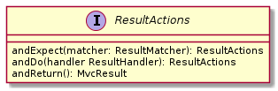

目標
本章中，我們將基於Spring Boot開發提供RESTful API的Catalog微服務。我們將學習：
-
使用Lombok在編譯器生成Getter和Setter訪問器，減少模板代碼
-
使用Spring Data/Spring Data MongoDB訪問MongoDB
-
使用Spring Data REST從Repository構建RESTful API
-
使用Spring Test/MockMVC測試RESTFul API
-
使用Spring REST Docs生成簡潔、準確且結構良好的RESTFul API文檔
設計
用例
Catalog微服務負責維護Product和ProductImage兩個業務模型實體。

-
Product，可被獨立增刪改查的業務實體，其可關聯一至多個ProductImage
-
ProductImage，可被獨立增刪改查的業務實體，其可被零至一個Product關聯。如若關聯其的Product被移除，不會影嚮ProductImage實體的狀態。
Catalog微服務需支持特性：
-
創建新的ProductImage
-
更新ProductImage
-
移除ProductImage
-
分頁查詢所有ProductImage
-
讀取單個ProductImage
-
創建新的Product
-
更新Product
-
移除Product
-
分頁查詢所有ProductImage
-
讀取單個Product
架構
Catalog微服務採用分層架構，自上往下分為：
-
展示層。以RESTFul風格向外曝露Catalog支持的領域模型和操作，以JSON格式接受和迴應領域模型內容。
-
業務邏輯層，處理應用相關的業務邏輯，比如填充createdAt和updatedAt。
-
數據訪問層，處理Java object和具體存儲實體之間的映射轉換，實現橧刪改查等存儲訪問操作。

這𥚃我們採用Spring Data REST實現展現層；供助Spring Data REST開放的實體事件擴展機制，實現業務邏輯；數據存儲方案選用MongoDB；數據訪問層採用Spring Data MongoDB實現。
理解 Lombok
Lombok項目是一個Java庫，它會自動插入您的編輯器和構建工具中，從而使您的Java更加生動有趣。 永遠不要再寫另一個getter或equals方法，帶有一個註釋的您的類有一個功能全面的生成器，自動化您的日誌記錄變量等等。
https://projectlombok.org
使用javac（以及netbeans，maven，gradle和大多數其他構建系統）時，lombok作為註釋處理器運行。
Lombok在classpath中，且javac將在它可以找到的類路徑上加載每個
META-INF/services/javax.annotation.processing.Processor文件，讀取每一行並加載該類，然後將其作為註釋處理器執行。lombok.jar有此文件，它將`lombok.launch.AnnotationProcessorHider$AnnotationProcessor`列為條目。
https://projectlombok.org/contributing/lombok-execution-path
Lombok實現為注解處理器「Annotation Processor」，在編譯期被Java編譯器調用，掃描代碼，讀取Lombok注解及關鍵詞標注的類，並執行相應的代碼轉換。
|
Lombok官方網站 Lombok Project |
理解 REST
代表性狀態轉移（REST）是一種軟件體系結構樣式，它定義了一組用於創建Web服務的約束。 符合REST體系結構樣式的Web服務（稱為RESTful Web服務）提供Internet上計算機系統之間的互操作性。 RESTful Web服務允許請求系統通過使用統一且預定義的無狀態操作集來訪問和操縱Web資源的文本表示。 其他類型的Web服務（例如SOAP Web服務）公開其自己的任意操作集。
https://en.wikipedia.org/wiki/Representational_state_transfer
RESTFul Web服務有以下特性：
-
以資源為中心，領域模型在RESTFul API中表現為資源，所有的業務操作都表現為對資源的操作。
-
重用HTTP請求方法。以HTTP請求方法表逹對資源的操作。HTTP協議中定義了九種請求方法：
Method Description GET
GET方法請求指定資源的表示形式。 使用GET的請求應僅檢索數據。
HEAD
HEAD方法請求的響應與GET請求的響應相同，但沒有響應主體。
POST
POST方法用於將實體提交給指定的資源，通常會導致狀態更改或對服務器產生副作用。
PUT
PUT方法用請求有效負載替換目標資源的所有當前表示形式。
DELETE
DELETE方法刪除指定的資源。
CONNECT
CONNECT方法建立到由目標資源標識的服務器的隧道。
OPTIONS
OPTIONS方法用於描述目標資源的通信選項。
TRACE
TRACE方法沿到目標資源的路徑執行消息環回測試。
PATCH
PATCH方法用於對資源進行部分修改。
RESTFul 主要重用其中的POST、DELETE、PUT和GET來分別表逹增、刪、改和查操作。
-
重用HTTP嚮應狀態碼。重用HTTP嚮應狀態碼來表逹請求的處理結果。HTTP協議定義了五類嚮應狀態碼
-
信息性的嚮應（100-199）
-
成功的嚮應（200-299）
-
重定向（300-399）
-
客戶端錯誤（400-499）
-
服務端錯誤（500-599）
常用的嚮應狀態碼有：
Code 說明 200 OK
該請求已成功。
201 Created
請求成功，並因此創建了新資源。 這通常是在POST請求或某些PUT請求之後發送的響應。當使用POST請求訪問RESTFul API創建新資源實體後，應返迴嚮應狀態碼200。
204 No Content
沒有要發送的內容，但標頭可能有用。 用戶代理可以使用新的代理更新該資源的緩存頭。當使用PUT請求訪問RESTFul API更新資源實體且未在嚮應報文中包含更新後的實體，應使用嚮應狀態碼204。
400 Bad Request
由於語法無效，服務器無法理解該請求。
401 Unauthorized
儘管HTTP標準指定“未經授權”，但從語義上講，此響應表示“未經驗證”。 也就是說，客戶端必須對自己進行身份驗證才能獲得請求的響應。
403 Forbidden
客戶端無權訪問內容； 也就是說，它是未經授權的，因此服務器拒絕提供所請求的資源。 與401不同，服務器知道客戶端的身份。
404 Not Found
服務器找不到請求的資源。 在瀏覽器中，這意味著無法識別URL。 在API中，這也可能意味著端點有效，但是資源本身不存在。 服務器也可以發送此響應而不是403，以隱藏來自未授權客戶端的資源。 由於此響應代碼在網絡上經常出現，因此可能是最著名的響應代碼。
405 Method Not Allowed
服務器知道該請求方法，但已被禁用，無法使用。比如針對祗讀資源的寫請求（POST、DELETE、PUT），RESTFul API可以嚮應此狀態碼。
415 Unsupported Media Type
服務器不支持所請求數據的媒體格式，因此服務器拒絕了該請求。
500 Internal Server Error
服務器遇到了不知道如何處理的情況。任何業務邏輯的錯誤都不應該嚮應該狀態碼。祗有真正無法處理或恢復的失效，比如依賴服務不可用等，才可以嚮應該狀態碼。
-
Product RESTFul Web API
REST Web服務以資源為中心，把領域模型Product直接映射為資源product，所以資源product的根URL就為 /products 。因為從語義上講，對資源根URL的操作，如GET、POST，都是作用於資源集合而非單個資源實體，所以使用復數形式更為恰當。（很多人認為使用單數形式是最佳實踐，因為英文名詞的復數形式規則並不統一且大部份人英文不好，硬用復數形式容易出現拚寫錯誤）
| 操作 | URL | HTTP方法 |
|---|---|---|
創建新Product |
/products |
POST |
更新Product |
/products/<productId> |
PUT |
更新與ProductImage之間的關聯 |
/products/<productId>/images |
PUT |
移除Product |
/products/<productId> |
DELETE |
讀取單個Product |
/products/<productId> |
GET |
分頁讀取所有Product |
/products?page=<pageIndex>&size=<pageSize> |
GET |
讀取Product關聯的ProductImage |
/products/<productId>/images |
GET |
ProductImage RESTFul API
| 操作 | URL | HTTP方法 |
|---|---|---|
創建新ProductImage |
/productImages |
POST |
更新ProductImage |
/productImages/<productImageId> |
PUT |
移除ProductImage |
/productImages/<productImageId> |
DELETE |
讀取單個ProductImage |
/productImages/<productImageId> |
GET |
分頁讀取所有ProductImage |
/productImages?page=<pageIndex>&size=<pageSize> |
GET |
理解 JSON
JSON(JavaScript Object Notation) 是一種輕量級的數據交換格式。易於人閱讀和編寫。同時也易於機器解析和生成。它基於JavaScript Programming Language, Standard ECMA-262 3rd Edition - December 1999的一個子集。 JSON採用完全獨立於語言的文本格式，但是也使用了類似於C語言家族的習慣（包括C, C++, C#, Java, JavaScript, Perl, Python等）。這些特性使JSON成為理想的數據交換語言。
JSON建構於兩種結構：
“名稱/值”對的集合（A collection of name/value pairs）。不同的語言中，它被理解為對象（object），紀錄（record），結構（struct），字典（dictionary），哈希表（hash table），有鍵列表（keyed list），或者關聯數組（associative array）。
值的有序列表（An ordered list of values）。在大部分語言中，它被理解為數組（array）。
https://www.json.org/json-zh.html
JSON是一種面嚮字符的、編程語言獨立的、易於人和機器讀寫的數據交換格式。使用JSON作為RESTFul Web服務與消費者之間交換實體內容的數據格格，可以最大限度地提升Web服務的兼容性。但需要注意，JSON是面嚮文本的數據交換格式，所有類型的數據都必須被編碼為文本形式，所以JSON並不適用二進制數據的交換，比如圖像、音頻、視頻。
|
關於JSON的規範定義，請參閱 ECMA-404 The JSON Data Interchange Standard |
理解 Hypermedia-Driven
Hypermedia指代所有包含指向其它媒體（如圖像、視頻和文本等）的鏈接的內容。Hypermedia-Driven的RESTFul Web服務則是指在請求體和嚮應體的內容為Hypermedia。
HATEOAS（Hypermedia as the Engine of Application State）是一組附加在RESTFul風格架構之上的約束，其旨在約束Hypermedia-Driven RESTFul Web服務。HATEOAS沒有嚴格的定義，各個框架都有自己的實現。但大多數HATEOAS實現都參考了以下規範：
理解 Spring Data REST
Spring Data REST是Spring Data的一部份，其致力於簡化在Spring Data repository之上構建超媒體驅動「hypermedia-driven」 REST web微務。
Spring Data REST 構建於 Spring Data repository 之上，分析你的應用領域模型且曝露超媒體驅動HTTP資源。
Spring Framework 本身提供了Spring MVC。借助Spring MVC，可以快速構造RESTFul web服務。再加上Spring HATEOAS，就可以構建超媒體驅動的RESTFul web服務了。但是RESTFul web服務是以資源為中心，其為每類資源實現一組有限的動作，如POS創建、PUT更新、DELETE移除。直接使用Spring MVC構建RESTFul web服務會造成很多模板代碼。Spring Data REST就是為了避免使用Spring MVC構建RESTFul web服務時產生冗餘模板代碼而被創造出來。Spring Data REST分析應用中的repository，分揀出領域模型和增刪改查方法，分別曝露為相應的RESTFul URLs.
Spring Data REST 開放出了八個實體事件，應用開發者可以注入自定義的事件監聽器以實現業務邏輯處理。Spring Data REST會釋放出以下八種事件：
-
BeforeCreateEvent -
AfterCreateEvent -
BeforeSaveEvent -
AfterSaveEvent -
BeforeDeleteEvent -
AfterDeleteEvent -
BeforeLinkSaveEvent -
AfterLinkSaveEvent -
BeforeLinkDeleteEvent -
AfterLinkDeleteEvent
BeforeCreateEvent 和 AfterCreateEvent
Spring Data REST在創建實體實例時，會釋放出 BeforeCreateEvent 和 AfterCreateEvent。
...
private ResponseEntity<ResourceSupport> createAndReturn(Object domainObject, RepositoryInvoker invoker,
PersistentEntityResourceAssembler assembler, boolean returnBody) {
publisher.publishEvent(new BeforeCreateEvent(domainObject)); (1)
Object savedObject = invoker.invokeSave(domainObject);
publisher.publishEvent(new AfterCreateEvent(savedObject)); (2)
...
}
...| 1 | 在調用repository方法將創建的實體持久化至存儲服務之前，釋放出事件 BeforeCreateEvent 。 |
| 2 | 在調用repository方法將創建的實體持久化至存儲服務之後，釋放出事件 AfterCreateEvent 。 |
POST和PUT請求都有可能觸發實體的創建。POST在REST語義中就是創建新實體，所以POST請求肯定會觸發實體創建。
...
@ResponseBody
@RequestMapping(value = BASE_MAPPING, method = RequestMethod.POST)
public ResponseEntity<ResourceSupport> postCollectionResource(RootResourceInformation resourceInformation,
PersistentEntityResource payload, PersistentEntityResourceAssembler assembler,
@RequestHeader(value = ACCEPT_HEADER, required = false) String acceptHeader)
throws HttpRequestMethodNotSupportedException {
resourceInformation.verifySupportedMethod(HttpMethod.POST, ResourceType.COLLECTION);
return createAndReturn(payload.getContent(), resourceInformation.getInvoker(), assembler,
config.returnBodyOnCreate(acceptHeader)); (1)
}
...PUT請求在REST語義中是更新實體，但若要求更新的目標實體不存在，則更新操作就自動轉化為創建操作。所以，當使用PUT請求更新不存在的實體時，會觸發實體創建。
...
@RequestMapping(value = BASE_MAPPING + "/{id}", method = RequestMethod.PUT)
public ResponseEntity<? extends ResourceSupport> putItemResource(RootResourceInformation resourceInformation,
PersistentEntityResource payload, @BackendId Serializable id, PersistentEntityResourceAssembler assembler,
ETag eTag, @RequestHeader(value = ACCEPT_HEADER, required = false) String acceptHeader)
throws HttpRequestMethodNotSupportedException {
...
return payload.isNew() ? createAndReturn(objectToSave, invoker, assembler, config.returnBodyOnCreate(acceptHeader))
: saveAndReturn(objectToSave, invoker, PUT, assembler, config.returnBodyOnUpdate(acceptHeader)); (1)
}
...| 1 | 若請求創建的實體是新建的即目標實體不存在，則更新請求轉化為創建操作。 |
BeforeSaveEvent 和 AfterSaveEvent
Spring Data REST在更新實體時會釋放出 BeforeSaveEvent 和 AfterSaveEvent 。
...
private ResponseEntity<ResourceSupport> saveAndReturn(Object domainObject, RepositoryInvoker invoker,
HttpMethod httpMethod, PersistentEntityResourceAssembler assembler, boolean returnBody) {
publisher.publishEvent(new BeforeSaveEvent(domainObject)); (1)
Object obj = invoker.invokeSave(domainObject);
publisher.publishEvent(new AfterSaveEvent(obj)); (2)
...
}
...| 1 | 在調用repository方法將更新的實體持久化至存儲服務之前，釋放出事件 BeforeSaveEvent 。 |
| 2 | 在調用repository方法將更新的實體持久化至存儲服務之後，釋放出事件 AfterCreateEvent 。 |
PUT和PATCH請求都會觸發實體更新操作。
...
@RequestMapping(value = BASE_MAPPING + "/{id}", method = RequestMethod.PUT)
public ResponseEntity<? extends ResourceSupport> putItemResource(RootResourceInformation resourceInformation,
PersistentEntityResource payload, @BackendId Serializable id, PersistentEntityResourceAssembler assembler,
ETag eTag, @RequestHeader(value = ACCEPT_HEADER, required = false) String acceptHeader)
throws HttpRequestMethodNotSupportedException {
...
return payload.isNew() ? createAndReturn(objectToSave, invoker, assembler, config.returnBodyOnCreate(acceptHeader))
: saveAndReturn(objectToSave, invoker, PUT, assembler, config.returnBodyOnUpdate(acceptHeader)); (1)
}
...| 1 | 當請求更新的目標實體存在時，PUT請求觸發更新操作。 |
...
@RequestMapping(value = BASE_MAPPING + "/{id}", method = RequestMethod.PATCH)
public ResponseEntity<ResourceSupport> patchItemResource(RootResourceInformation resourceInformation,
PersistentEntityResource payload, @BackendId Serializable id, PersistentEntityResourceAssembler assembler,
ETag eTag, @RequestHeader(value = ACCEPT_HEADER, required = false) String acceptHeader)
throws HttpRequestMethodNotSupportedException, ResourceNotFoundException {
...
return saveAndReturn(domainObject, resourceInformation.getInvoker(), PATCH, assembler,
config.returnBodyOnUpdate(acceptHeader)); (1)
}
...-
PATCH請求祗能觸發實體更新。
BeforeDeleteEvent 和 AfterDeleteEvent
Spring Data REST在移除實體時會釋放出事件 BeforeDeleteEvent 和 AfterDeleteEvent 。
...
@RequestMapping(value = BASE_MAPPING + "/{id}", method = RequestMethod.DELETE) (1)
public ResponseEntity<?> deleteItemResource(RootResourceInformation resourceInformation, @BackendId Serializable id,
ETag eTag) throws ResourceNotFoundException, HttpRequestMethodNotSupportedException {
...
return domainObj.map(it -> {
PersistentEntity<?, ?> entity = resourceInformation.getPersistentEntity();
eTag.verify(entity, it);
publisher.publishEvent(new BeforeDeleteEvent(it)); (2)
invoker.invokeDeleteById(entity.getIdentifierAccessor(it).getIdentifier());
publisher.publishEvent(new AfterDeleteEvent(it)); (3)
return new ResponseEntity<Object>(HttpStatus.NO_CONTENT);
}).orElseThrow(() -> new ResourceNotFoundException());
}
...| 1 | 針對實體的DELETE請求會觸發實體移除操作。 |
| 2 | 在將實體從存儲服務中移除之前，釋放出事件 BeforeDeleteEvent 。 |
| 3 | 在將實體從存儲服務中移除之後，釋放出事件 AfterDeleteEvent 。 |
BeforeLinkSaveEvent 和 AfterLinkSaveEvent
Spring Data REST在創建和變更實體關聯時會釋放出 BeforeLinkSaveEvent 和 AfterLinkSaveEvent 。
...
@RequestMapping(value = BASE_MAPPING, method = { PATCH, PUT, POST }, (1)
consumes = { MediaType.APPLICATION_JSON_VALUE, SPRING_DATA_COMPACT_JSON_VALUE, TEXT_URI_LIST_VALUE })
public ResponseEntity<? extends ResourceSupport> createPropertyReference(RootResourceInformation resourceInformation,
HttpMethod requestMethod, @RequestBody(required = false) Resources<Object> incoming, @BackendId Serializable id,
@PathVariable String property) throws Exception {
...
Function<ReferencedProperty, ResourceSupport> handler = prop -> {
...
publisher.publishEvent(new BeforeLinkSaveEvent(prop.accessor.getBean(), prop.propertyValue)); (2)
Object result = invoker.invokeSave(prop.accessor.getBean());
publisher.publishEvent(new AfterLinkSaveEvent(result, prop.propertyValue)); (3)
return null;
};
doWithReferencedProperty(resourceInformation, id, property, handler, requestMethod);
return ControllerUtils.toEmptyResponse(HttpStatus.NO_CONTENT);
}
...| 1 | PATCH、PUT或POST請求鏈接（LINK）類型的實體屬性都會觸發實體鏈接屬性的創建或變更。 |
| 2 | 在將鏈接屬性變更持久化至存儲服務之前，釋放出 BeforeLinkSaveEvent 。 |
| 3 | 在將鏈接屬性變更持久化至存儲服務之後，釋放出 AfterLinkSaveEvent 。 |
BeforeLinkDelete 和 AfterLinkDelete
Spring Data REST在移除實體之間的關聯（LINK）時，會釋放出 BeforeLinkDeleteEvent 和 AfterLinkDeleteEvent 。
...
@RequestMapping(value = BASE_MAPPING, method = DELETE) (1)
public ResponseEntity<? extends ResourceSupport> deletePropertyReference(RootResourceInformation repoRequest,
@BackendId Serializable id, @PathVariable String property) throws Exception {
Function<ReferencedProperty, ResourceSupport> handler = prop -> prop.mapValue(it -> {
...
publisher.publishEvent(new BeforeLinkDeleteEvent(prop.accessor.getBean(), prop.propertyValue)); (2)
Object result = repoRequest.getInvoker().invokeSave(prop.accessor.getBean());
publisher.publishEvent(new AfterLinkDeleteEvent(result, prop.propertyValue)); (3)
return (ResourceSupport) null;
}).orElse(null);
doWithReferencedProperty(repoRequest, id, property, handler, HttpMethod.DELETE);
return ControllerUtils.toEmptyResponse(HttpStatus.NO_CONTENT);
}
...| 1 | 目標為鏈接類型的實體屬性的DELETE請求會觸發實體關聯移除操作。 |
| 2 | 在將實體關聯移除持久化至存儲服務之前，釋放出事件 BeforeLinkDeleteEvent 。 |
| 3 | 在將實體關聯移除持久化至存儲服務之後，釋放出事件 AfterLinkDeleteEvent 。 |
注入事件處理器
應用開發者可以自定義事件處理器，再使用注解將自定義事件處理器注刪為事件監聽器。Spring Data REST提供了十個注解分別對應上述十個實體事件：
-
@HandleBeforCreate -
@HandleAfterCreate -
@HandleBeforeSave -
@HandleAfterSave -
@HandleBeforeDelete -
@HandleAfterDelete -
@HandleBeforeLinkSave -
@HandleAfterLinkSave -
@HandleBeforeLinkDelete -
@HandleAfterLinkDelete
理解 MongoDB
MongoDB是一個文檔數據庫，具有所需的可伸縮性和靈活性，可用於所需的查詢和索引編制。
MongoDB將數據存儲在類似於JSON的靈活文檔中，這意味著字段隨文檔的不同而不同，並且數據結構可以隨時間而變化
文檔模型映射到應用程序代碼中的對象，從而使數據易於使用
臨時查詢，索引編制和實時聚合提供了訪問和分析數據的強大方法
MongoDB以分佈式數據庫為核心，因此內置了高可用性，水平擴展和地理分佈並且易於使用
MongoDB是免費使用的。 在AGPL下發布了2018年10月16日之前發布的版本。 2018年10月16日之後發布的所有版本（包括先前版本的修補程序修補程序）均根據服務器端公共許可證（SSPL）v1發布。
https://www.mongodb.com/what-is-mongodb
MongoDB是schema-free的數據庫，其非常適用於同一類別數據結構會隨時間較頻繁變動（增加屬性、減少屬性等）的應用場景。Catalog服務所維護的數據就符合這一特徵。
理解 Spring Data MongoDB
Spring Data的任務是為數據訪問提供一個熟悉且一致的基於Spring的編程模型，同時仍保留基礎數據存儲的特殊特徵。
Spring Data MongoDB是Spring Data項目的一部分，該項目旨在為新數據存儲提供熟悉且一致的基於Spring的編程模型，同時保留特定於存儲的功能。
Spring Data MongoDB項目提供了與MongoDB文檔數據庫的集成。 Spring Data MongoDB的關鍵功能區域是一個以POJO為中心的模型，該模型用於與MongoDB DBCollection進行交互並輕鬆編寫存儲庫樣式的數據訪問層。
Spring Data的核心模式是倉庫設計模式「Repository Design Pattern」。 倉庫設計模式最早由Eric Evens在他的著作《Domain Driven Design》中提出，其核心概念是倉庫「Repository」。倉庫在業務邏輯層與數據源之間扮演着中間人的⻆色，其解耦了業務邏輯層和數據源，使用業務邏輯層無需關心具體數據源的接口或任何接口變更，甚至無需任何業務邏輯層的代碼變更就可以遷移至不同的數據源上。
Spring Data提供的核心接口就是 Repository 。應用開發者祗需聲明專用於領域模型的、繼承 Repository 的倉庫接口，針對特定存儲服務實現的Spring Data模塊（如Spring Data MongoDB）會構造相應的倉庫實現Bean。
Spring Data除了 Repository 之外，還提供了其它倉庫接口。這些倉庫口提供了常用的數據訪問操作:
-
org.springframework.data.repository.CrudRepository提供了基本的增刪改查操作 -
org.springframework.data.repository.PagingAndSortingRepository添加了分頁和排序功能 -
org.springframework.data.repository.query.QueryByExampleExecutor提供了相似查詢功能，應用可以按照業務邏輯定義相似算法，查詢相似（不完全相同，或主鍵相同）的實體

Spring Data MongoDB在Spring Data Commons提供的倉庫接口基礎上，還擴展了 org.springframework.data.mongodb.repository.MongoRepository 。
理解JUnit
JUnit 是一個 Java 編程語言的單元測試框架。JUnit 定義了三層單元測試組織結構：
-
TestSuite
-
TestCase
-
Test
Test 是單元測試的最小組織單位，多個 Test 可以組織為 TestCase，多個 TestCase 可以組織為 TestSuite。在 Java 中，TestCase 和 TestSuite 實現為類，Test 實現為 TestCase 的方法。所以在實際應用中，Test 和 TestCase 是必須的，TestSuite 是可選的。
Junit 定義了五個單元測試執行階段：
-
BeforeClass
-
BeforeEach
-
Test
-
AfterEach
-
AfterClass
BeforeClass 為 TestCase 的初始階段，JUnit 在即將執行 TestCase 所包含的 Test 之前執行 BeforeClass；BeforeEach 為 Test 的前置階段，JUnit 在每次執行 Test 之前執行 BeforeEach；Test 為單元測試的主要階段，該階段應包含嚮測試對象輸入和斷言測試對象的輸出；AfterEach 為 Test 的後置階段，JUnit 在每次執行 Test 之後執行 AfterEach；AfterClass 為 TestCase 的善後階段，JUnit 在執行完 TestCase 所包含的所有 Test 之後執行 AfterClass。
舉個例子，
public class ExampleTest {
private Example testObject;
@BeforeClass
public void beforeClass() {
System.out.println("Before test case ExampleTest");
}
@AfterClass
public void afterClass() {
System.out.println("After test case ExampleTest");
}
@BeforeEach
public void setUp() {
System.out.println("SetUp for each test");
testObject = new Example();
}
@AfterEach
public void tearDown() {
System.out.println("TearDown for each test");
}
@Test
public void testFunA() {
String actual = testObject.funA();
assertEqual(actual, "expected value");
}
@Test
public void testFunB() {
String actual = testObject.funB();
assertEqual(actual, "expected value");
}
}BeforeClass, AfterClass, BeforeEach, AfterEach 和 Test 都被實現為 TestCase 的方法，通過注解聲明。JUnit 在執行上述 TestCase，方法調用序列為：
-
beforeClass() -
setUp() -
testFunA() -
tearDown() -
setUp() -
testFunB() -
tearDown() -
afterClass()
理解Spring MVC Test Framework
Spring MVC測試框架提供了一流的支持，可使用可與JUnit，TestNG或任何其他測試框架一起使用的流暢API測試Spring MVC代碼。 它基於spring-test模塊的Servlet API mock objects構建，因此不使用正在運行的Servlet容器。
https://docs.spring.io/spring-framework/docs/current/spring-framework-reference/testing.html#spring-mvc-test-framework
Spring MVC Test框架通過 DispatcherServlet 與Spring MVC代碼直接通信，無需運行Servlet容器。且測試代碼與被測試代碼（服務端代碼）運行在同一個JVM中，所以不僅可以驗證服務端代碼的輸出還可以驗證服務端代碼的內部狀態，即支持服務端代碼的白盒測試。
在生產環境中， dispatcherServlet 和 controller 都運行在 Servlet 容器中（Spring Boot應用是內嵌Servlet容器），並通過Servlet容器嚮外曝露HTTP服務。客户端應用（Web瀏器、原生應用等）通過HTTP協議訪問Servlet容器，Servlet容器將請求轉化為 HttpServletRequest 交由 dispatcherServlet ； dispatcherServlet 再分發給對應的 controller 。

Spring MVC Test框架則通過MockMvc（Servlet API mock objects）直接與 dispatcherServlet 通信。我們的測試目標是應用上下文配置和 controller 及其調用的其它Beans，Servlet容器並不是我們的測試目標（因為它們的代碼不是我們寫的）。使用這種測試方法可以最大限度地排除第三方代碼，僅關注於應用代碼的測試。
理解 Spring REST Docs
Spring REST Docs可幫助您記錄RESTful服務。
它結合了用Asciidoctor編寫的手寫文檔和Spring MVC Test生成的自動生成的代碼片段。 這種方法使您擺脫了Swagger之類的工具所產生的文檔限制。
它可以幫助您生成準確，簡潔且結構合理的文檔。 然後，該文檔可讓您的用戶以最少的麻煩獲得他們所需的信息。
https://spring.io/projects/spring-restdocs
Spring REST Docs致力於幫助應用開發者生成準確且可讀的RESTFul服務文檔。Spring REST Docs借助測試生成的HTTP請求和响應內容片斷，再組合手工編寫的Asciidoc或Markdown文本，產生HTML格式的文檔。文檔的生成依賴測試的通過。所以當測測未通過時，文檔也不會被生成，從而避免成生與實現不符的文檔。
Spring REST Docs可以從由Spring MVC Test框架、Spring WebFlux’s WebTestClient 和REST Assured 3編寫的測試中截取HTTP請求和响應片斷。
應用開發者編寫asciidoc文檔（以.adoc, .asciidoc, .ad, .asc山大弓火後綴的），引用Spring REST Docs在測試階段截取的片斷。Asciidoctor讀取asciidoc文檔和請求响應片斷，轉換生成HTML格式的可閱讀文檔（Asciidoctor還支持其它輸出格式，如PDF、EPUB等）。
作為Spring REST Docs的核心，其提供了豐富的HTTP請求响應片斷截取和注釋功能。所有這些截取注釋功能都實現為 org.springframework.restdocs.snippet.Snippet 的實現類，應用開發者通過構造方法穫取這些Snippet實現類實例。

HTTP報文分為請求（request）報文和响應（response）報文。請求報文由三部份組成：請求行（Request Line）、頭（Header Field）和消息體（Message Body）。响應報文也由三部份組成：狀態行（Status Line）、頭（Header Field）和消息體（Message Body）。
Spring REST Docs為請求行，頭和消息體分別提供了Snippet。這些Snippet的構造方法被組織為三個類：
-
org.springframework.restdocs.request.RequestDocumentation包含用於截取請求行中各個部份的Snippet的構造方法。 -
org.springframework.restdocs.headers.HeaderDocumentation包含用於截取請求頭和响應頭的Snippet的構造方法。 -
org.springframework.restdocs.payload.PayloadDocumentation包含用於截取請求消息體和响應消息體的Snippet的構造方法。
除此之外，Spring REST Docs還為Hypermedia-Driven RESTFul Web服務提供了專用的Snippets。這些專用Snippets的構造方法被組織為類 org.springframework.restdocs.hypermedia.HypermediaDocumentation 。
|
關於Spring REST Docs完整的資料，請參閱官方文檔 Spring REST Docs |
實現
最簡單的創建一個新的 Spring Boot 應用方法是使用 Spring Initializr。使用瀏覽器訪問 https://start.spring.io :
-
Project 選擇 Gradle Project，使用 Gradle 構建我們的項目；
-
Language 選擇 Java；
-
Spring Boot 撰擇 2.2.7 或其它 2.2.x 版本，最新版（訖今為止）的 Spring Cloud Hoxton 兼容 Spring Boot 2.2.x；
-
Project Metadata 部份，Group 填
io.github.rscai.microservices，Artifact 填catalog，Name 填catalog，Packaging 撰 Jar，Java 撰擇版本 8； -
Dependencies 選擇
-
Spring Web
-
Spring Data MongoDB
-
Rest Repositories
單擊GENERATE，Spring initializr 就會生成 ZIP 格式的項目文件。
將 catalog.zip 解壓後得到一個 Spring Boot 項目。其中：
.gitignore
build.gradle
+ gradle
+ wrapper
gradle-wrapper.war
gradle-wrapper.properties
graldew
gradlew.bat
HELP.md
settings.gradle
+ src
+ main
- java
- resources
+ test
- java
-
.gitignore, 羅列了應被 GIT 忽略的文件和目錄。自動生成及臨時文件及目錄不應被納入版本控制； -
build.gradle，Gradle 項目文件，定義了項結構及構建過程； -
gradle/wrapper/包含所有 Gradle Wrapper 相關的文件； -
gradlew是 UNIX-like 平台版本的 Gradle 命令包裝； -
gradlew.bat是 Windows 平台版本的 Gradle 命令包裝； -
HELP.md顧名思義是幫助文檔，與 README 類似； -
setting.gradleGradle 的屬性文件； -
src/包含所有源代碼和資源文件： -
src/main/包含所有部署至運行環境的源代碼文件（以編譯後的目標代碼形式被部署至運行環境）和資源文件： -
src/main/java/包含所有部署至運行環境的 Java 源代碼文件： -
src/main/resources/包含所有部署至運行環境的資源文件； -
src/test包含所有用於測試的源代碼和資源文件； -
src/test/java/包含所有用於測試的 Java 源代碼文件； -
src/test/resource/包含所有用於測試的資源文件。
將 catalog 項目導入 IntelliJ IDEA。首先，打開 Intellij IDEA，然後，單繫 Import Project，選定 catalog 項目目錄，再然後選擇以 Gradle 項目形式導入。IntelliJ IDEA 會自動初始執行 Gradle 配置，下載 /gradle/wrapper/gradle-wrapper.properties 中指定版本的 Gradle。
構建
本項目使用 Gradle 構建。Gradle 構建過程主要通過 build.gradle 描述。
首先，引用必要的 Gradle 插件。
plugins {
id 'org.springframework.boot' version '2.2.2.RELEASE' (1)
id 'io.spring.dependency-management' version '1.0.8.RELEASE' (2)
id 'java'
id "io.freefair.lombok" version "4.1.6"
id "org.sonarqube" version "2.7.1"
id 'jacoco'
id 'org.asciidoctor.convert' version '1.5.3'
}
...| 1 | 引入 Spring Boot 插件，其版本決定了引入的 Spring Boot 庫的版本。所以有了 Spring Boot 插件，就無需顯式指定各個 Spring Boot 庫的版本了。 |
| 2 | 引入 Spring 依賴管理插件。 |
然後，引入依賴。
...
ext {
snippetsDir = file('build/generated-snippets')
set('springCloudVersion', "Hoxton.SR1") (1)
}
dependencies {
asciidoctor 'org.springframework.restdocs:spring-restdocs-asciidoctor'
implementation 'org.springframework.boot:spring-boot-starter-data-mongodb' (2)
implementation 'org.springframework.boot:spring-boot-starter-web' (3)
implementation 'org.springframework.boot:spring-boot-starter-data-rest' (4)
implementation 'org.springframework.boot:spring-boot-starter-actuator'
implementation 'org.springframework.cloud:spring-cloud-starter-netflix-eureka-client'
implementation 'org.springframework.boot:spring-boot-starter-security'
implementation 'org.springframework.security:spring-security-oauth2-resource-server'
implementation 'org.springframework.security:spring-security-oauth2-jose'
testImplementation 'org.springframework.boot:spring-boot-starter-test'
testImplementation 'org.springframework.restdocs:spring-restdocs-mockmvc'
testImplementation 'de.flapdoodle.embed:de.flapdoodle.embed.mongo'
testImplementation 'org.springframework.security:spring-security-test'
}
dependencyManagement {
imports {
mavenBom "org.springframework.cloud:spring-cloud-dependencies:${springCloudVersion}" (5)
}
}
...| 1 | 將 Spring Cloud 版本定義為變量，便於引用及統一管理。Spring Cloud 與 Spring Boot 之間的版本兼容性發佈在 https://spring.io/projects/spring-cloud#overview
|
||||||||||||
| 2 | org.springframework.boot:spring-boot-starter-data-mongodb 引入 Spring Data MongoDB 相關的庫，用以生成訪問 MongoDB 的 Repository。 |
||||||||||||
| 3 | spring-boot-starter-web 引入了 Spring MVC 相關的庫。 |
||||||||||||
| 4 | org.springframework.boot:spring-boot-starter-data-rest 引入 Spring Data REST 相關的庫。Spring Data REST 將 Repository 方法發佈為 RESTFul 風格的 Web 服務，以減少模板代碼。 |
||||||||||||
| 5 | 通過引入 org.springframework.cloud:spring-cloud-dependencies BOM 來管理 Spring Cloud 庫的版本。 |
領域模型
利用Lombok編譯期生成getter/setter方法，減少重復的模板代碼。
使用Spring Data MongoDB提供的注解描述java類與MongoDB集合、java字段與MongoDB字段之間的映射關系。Spring Data MongoDB會根據映射關系生成對應的Repository實現。
Product
@Getter (1)
@Setter (2)
@Document (3)
public class Product {
@Id (4)
private String id;
private String title;
private List<String> tags;
@DBRef (5)
private List<ProductImage> images;
private Date createdAt;
private Date updatedAt;
}| 1 | Lombok會在編譯期掃描類，為以 lombok.Getter 注解標注的類中所有成員字段生成getter訪問器。比如針對字段 private String id ，其生成了相當與以下源代碼的Getter訪問器：
為了使使用Gradle構建項目也可處理Lombok注解、生成相應訪問器，我們需要在 build.gradle
|
| 2 | Lombok會在編譯期掃描類，為以 lombok.Setter 注解標注的類中所有成員字段生成Setter訪問器。比如針對字段 private String id ，其生成了相當與以下代碼的Setter訪問器：
|
| 3 | 注解 org.springframework.data.mongodb.core.mapping.Document 將一個Java類映射到MongoDB的某個Collection。在MongoDB中，Collection是Document的集合。在Java中，Class是Object的模板，"從某個Class實例出來的Object"是一個Object的集合。所以，在Java Class/Object與MongoDB Collection/Document映射關系中，Class對應Collection，Object對應Document。而Object中的字段對應Document中的字段。

其實例object映射為MongoDB中的一個docuemnt。object中的每一個屬性映射為document中的一個字段。比如，object中的字段 |
| 4 | 使用注解 org.springframework.data.annotation.Id 將對象中的字段`id`映射為文檔的主鍵 id 。 |
| 5 | 使用注解 org.springframework.data.mongodb.core.mapping.DBRef 將對象中的字段 images 映射為一組 com.mongodb.DBRef 。 com.mongodb.DBRef 是指嚮另一個文檔的引用。 @DBRef 可用以標注簡單字段或集合字段。 |
Spring Data MongoDB提供的映射注解：
| 注解 | 作用目標 | 說明 |
|---|---|---|
@Id |
字段 |
指明該字段是主鍵。 |
@MongoId |
字段 |
指明該字段是主鍵，與@Id不同的是其接受一個可選的參數 |
@Document |
類 |
指明該類是要映射至數據庫的。同時可以指定對應的collection名穪。 |
@DBRef |
字段 |
指明該字段會被映射為 |
@Indexed |
字段 |
描述該字段上的索引。 |
@CompoundIndex |
類 |
描述聯合索引。 |
@GeoSpatialIndexed |
字段 |
描述該字段上的地理索引。 |
@TextIndexed |
字段 |
描述該字段上的文本索引。 |
@HashIndexed |
字段 |
聲明該字段上的HASH索引以用於分片集群上分區數據。 |
@Language |
字段 |
為文本索引設置語言屬性。 |
@Transient |
字段 |
默認所有私有字段都被映射到Mongo文檔，該注解可以顯式指明不映射該字段。 |
@PersistenceConstructor |
構造器 |
指明在從數據庫實例化對象時使用該構造器。構造器的實參則按名穪從數據庫文檔中穫取。 |
@Value |
構造器參數 |
顯式聲明構造器參數所對應的文檔字段。 |
@Field |
字段 |
顯式描述字段映射，包括對應文檔中字段的名穪和類型。 |
@Version |
字段 |
指明該字段將作為樂觀鎖定「Optimistic Locking」機制中的版本屬性，在保存變更之前都會先檢查版本值是否為所期望的。其初始值為 |
ProductImage
@Getter (1)
@Setter (2)
@Document (3)
public class ProductImage {
@Id (4)
private String id;
private String src;
private Date createdAt;
private Date updatedAt;
}| 1 | Lombok會在編譯期掃描類，為以 @lombok.Getter 注解標注的類中所有成員字段生成getter訪問器。 |
| 2 | Lombok會在編譯期掃描類，為以 @lombok.Setter 注解標注的類中所有成員字段生成setter訪問器。 |
| 3 | 注解 org.springframework.data.mongodb.core.mapping.Document 將一個類 ProductImage 映射至MongoDB的Collection ProductImage。 |
| 4 | org.springframework.data.annotation.Id 將對象中的字段 id 映射為文檔的主鍵 id 。 |
倉庫 Repository
Repository 是Spring Data抽象的中心接口。應用開發者以 Repository 子接口的形式聲明模型Repository及其需支持的數據訪問方法，Spring Data的具體數據存儲模塊（本例中是Spring Data MongoDB）將會為其生成相應的實現類。由於這些實現類僅包含模板代碼，所以自動生成可以大幅減少應用開發者重復工作。
ProductRepository
@RepositoryRestResource(collectionResourceRel = "products", path = "products")
public interface ProductRepository extends MongoRepository<Product, String> { (1)
}| 1 | 為模型 Product 創建專屬的 ProductRepository 接口，繼承至 org.springframework.data.mongodb.repository.MongoRepository . MongoRepository 繼承了接口 PagingAndSortingRepository ，Spring Data MongoDB會其生成一個支持增刪改查及分頁排序的MongoDB訪問實現類。因為 ProductRepository 除了繼承的方法聲明外，沒有聲明其它方法，所以Spring Data MongoDB就會直接使用通用的實現類 org.springframework.data.mongodb.repository.support.SimpleMongoRepository<T, ID> 做為其實現。 |
ProductImageRepository
@RepositoryRestResource(collectionResourceRel = "productImages", path = "productImages")
public interface ProductImageRepository extends MongoRepository<ProductImage, String> { (1)
}| 1 | 為模型 ProductImage 創建專屬的 ProductImageRepository ，繼承至 org.springframework.data.mongodb.repository.MongoRepository 。 |
RESTful Web 服務
Spring Data REST 是Spring Data的一部份，旨於簡化在Spring Data倉庫上構建hypermedia-driven REST Web服務。應用開發者僅需在依賴中引入 spring-boot-starter-data-rest ，再聲明領域模型的倉庫，Spring Data REST就會將其發佈為 Hypermedia-Driven REST Web服務。
...
dependencies {
...
implementation 'org.springframework.boot:spring-boot-starter-data-rest' (1)
...
}
...| 1 | 將 spring-boot-starter-data-rest 引入至 implemenation 範圍依賴。 |
@RepositoryRestResource(collectionResourceRel = "products", path = "products") (1)
public interface ProductRepository extends MongoRepository<Product, String> {
}| 1 | @RepositoryRestResource 宣告 ProductRepository 的數據訪問方法需被曝露為RESTful介面。RESTFul風格的API是以resource為中心，repository所專屬的模型就對應為RESTFul中的resource。 @RepositoryRestResource 充許應用開發者自定義模型所對應的resource在URL中及在內容體中的名字。本例中，resource Product的根RESTFul URL定義為 products/ 。在HATEOAS標準的內容體中，Product集合會被命名為 products ，例如：
|
Spring Data REST有四種倉庫檢測策略，用以檢測哪些倉庫應被曝露為REST Web服務。其默認的檢測策略是曝露所有公共的倉庫接口（除了通過注解顯式標注不曝露的倉庫），但我推薦使用 ANNOTATION 檢測策略，僅曝露以注解 @RepositoryRestResource 顯式標注的倉庫。以下是Spring Data REST提供的四種倉庫檢測策略：
| 名穪 | 描述 |
|---|---|
DEFAULT |
曝露所有公共的倉庫但通過注解 |
ALL |
曝露所有倉庫，不考慮其可見性或被顯式標記為不曝露。 |
ANNOTATED |
僅曝露被注解 |
VISIBILITY |
僅曝露公共的且被注解標記的倉庫。 |
Spring Data REST的檢測策略可以通過聲明一個 RepositoryRestConfigurer Bean來自定義。
.RepositoryRestConfig.java
@Configuration (1)
public class RepositoryRestConfig {
@Bean (2)
public RepositoryRestConfigurer repositoryRestConfigurer() {
return new RepositoryRestConfigurer() {
@Override
public void configureRepositoryRestConfiguration(RepositoryRestConfiguration config) {
config.setRepositoryDetectionStrategy(RepositoryDetectionStrategies.ANNOTATED); (3)
}
};
}
}| 1 | @Configurition 聲明該類為配置類。 |
| 2 | 在Spring上下文中聲明個類型為 RepositoryRestConfigurer 的Bean。 |
| 3 | 構造一個子類，並覆寫方法 configureRepositoryRestConfiguration ，自定義倉庫檢測策略為 ANNOTATED 。 |
@RepositoryRestResource(collectionResourceRel = "productImages", path = "productImages") (1)
public interface ProductImageRepository extends MongoRepository<ProductImage, String> {
}| 1 | 用注解 org.springframework.data.rest.core.annotation.RepositoryRestResource 宣告 ProductImageRepository 的數據訪問方法需被曝露為RESTFul Web服務。RESTFul Web服務是以資源為中心的， ProductImageRepository 所專屬於的領域模型 ProductImage 就對應為RESTFul中的資源。 @RepositoryRestResource 允許應用闕發者自定義模型所對應資源名穪。本例中，資源的名穪為`product`。 |
測試
一個典型的軟件測試金字塔自下而上為：
-
單元測測「Unit Test」
-
集成測試「Integration Test」
-
應用編程接口測試「API Test」
-
功能測試「Function Test」
-
性能測試「Performance Test」
單元測試是一種以單個代碼單元（在Java中就是類）為測試目標的測試方法。
我們應權衡考慮測試的覆盖度和編寫維護測試代碼的工作量。鍳於我們的應用大量使用第三框架，應用開發者編寫的代碼實際上很少，且是RESTFul的Web服務。所以跳過單元測試和集成測試，僅做應用編程接口測試是比較合適的。
應用編程接口測試「API Test」
Spring Test提供了Spring MVC Test框架，其為Spring MVC代碼測試提供了流暢的API，應用開發者可以方便等將其與JUnit、TestNG或其它測試框架集成。
本例中，我們集成JUnit和Spring MVC Test框架，實現應用編程接口測試。
以測試創建和讀取單個Product為例。首先，創建測試目標及MockMvc。
@Import(RestDocsMockMvcConfiguration.class)
@RunWith(SpringRunner.class) (1)
@SpringBootTest(classes = CatalogApplication.class) (2)
@AutoConfigureMockMvc (3)
@AutoConfigureRestDocs
public class ProductTest {
private static final String ENDPOINT = "/products";
@Autowired
private MockMvc mvc; (4)
@Autowired
private ObjectMapper objectMapper; (5)
@Autowired
private ProductImageRepository imageRepository; (6)
...
}| 1 | 使用JUnit注解 org.junit.runner.RunWith 指明使用Spring擴展的JUnit Runner org.springframework.test.context.junit4.SpringRunner 。 SpringRunner 會初始化Spring上下文，從而可以在測試代碼中使用依賴注入、模組掃描等Spring特性。默認的JUnit Runner並不會初始化Spring上下文。 |
| 2 | 使用注解 org.springframework.boot.test.context.SpringBootTest 聲明測試用Spring上下文。 @SpringBootTest 可以指定上下文配置類，這點我們使用生產代碼相同的應用入口類配置測試上下文。 |
| 3 | 使用注解 org.springframework.boot.test.autoconfigure.web.servlet.AutoConfigureMockMvc 聲明配置MockMvc，然後就可以在測試代碼中注入MockMvc Bean了。 |
| 4 | 使用注解 org.springframework.beans.factory.annotation.Autowired 聲明注入MockMvc。 |
| 5 | 使用注解 org.springframework.beans.factory.annotation.Autowired 聲明注入ObjectMapper。MockMvc是以包裝了HTTP請求和响應的 HttpServletRequest 和 HttpServletResponse 的形式與DispatcherServlet通信的，所以需要構造和解析JSON格式的請求體和响應體。在測試代碼中使用與被測試代碼相同皂JSON序列化和反序列化實現可以避免編解碼不一致的麻煩。 |
| 6 | 使用注解 org.springframework.beans.factory.annotation.Autowired 聲明注入 ProductImageRepository 。在領域模型中，Product關聯ProductImage，所以有些測試用例需要預置ProductImage數據。直接使用 ProductImageRepository 是最直接簡單的預置ProductImage數據的方法。 |
然後，預置ProductImage數據。
...
@Before (1)
public void setUp() {
ProductImage imageA = new ProductImage(); (2)
imageA.setSrc("https://aaa.bbb.ccc/ddd.png");
imageA.setCreatedAt(new Date());
imageA.setUpdatedAt(new Date());
imageAId = imageRepository.save(imageA).getId(); (3)
ProductImage imageB = new ProductImage();
imageB.setSrc("https://bbb.ccc.ddd/eee.png");
imageB.setCreatedAt(new Date());
imageB.setUpdatedAt(new Date());
imageBId = imageRepository.save(imageB).getId();
ProductImage imageC = new ProductImage();
imageC.setSrc("https://ccc.ddd.eee/fff.png");
imageC.setCreatedAt(new Date());
imageC.setUpdatedAt(new Date());
imageCId = imageRepository.save(imageC).getId();
}
...| 1 | 使用注解 org.junit.Before 聲明在執行每個測試方法之前都預置一遍數據。 |
| 2 | 構造預置的 ProductImage 對象。 |
| 3 | 調用 ProductImageRepository 方法，將預置 ProductImage 對象持久化至數據庫 |
再然後，通過MockMvc嚮測試目標發送模擬RESTFul HTTP請求並校驗响應。
Hypertexy Transfer Protocol (HTTP)是一種請求/嚮應架構的通信協議。其共定義了兩種消息包：請求包和嚮應包。請求包由請求行、標頭和消息體三部份構成，嚮應包由狀態行、標頭和消息體三部份構成。MockMvc提供了豐富的工具構造請求的各個部份，和校驗嚮應的各個部份。MockMVC是直接與DispatcherServlet交互的，所以其是構造和校驗 HttpServletRequest 和 HttpServletResponse 對象。
...
@Test
public void testCreateAndGet() throws Exception {
final String imageALink = obtainLinkOfImage(imageAId);
final String imageBLink = obtainLinkOfImage(imageBId);
final String title = "New Product";
final String ELECTRONICS = "Electronics";
final String MOBILE = "Mobile";
String createResponse = mvc.perform(
post(ENDPOINT).accept(MediaType.APPLICATION_JSON).contentType(MediaType.APPLICATION_JSON) (1)
.content(String.format(
"{\"title\":\"%s\",\"tags\":[\"%s\",\"%s\"],\"images\":[\"%s\",\"%s\"]}",
title, ELECTRONICS, MOBILE, imageALink, imageBLink)))
.andDo(print())
.andExpect(status().isCreated()) (2)
.andExpect(jsonPath("$.title", is(title))) (3)
.andExpect(jsonPath("$.createdAt", notNullValue()))
.andExpect(jsonPath("$.updatedAt", notNullValue()))
.andExpect(jsonPath("$._links.images", notNullValue()))
.andDo(document("product/create", links(), requestFields(
fieldWithPath("images").type(JsonFieldType.ARRAY)
.description("links of referred ProductImage")),responseFields()))
.andReturn().getResponse().getContentAsString();
String productId = Stream
.of(objectMapper.readTree(createResponse).at("/_links/self/href").asText().split("/"))
.reduce((first, second) -> second).orElse(null); (4)
mvc.perform(get(ENDPOINT + "/{id}", productId).accept(MediaType.APPLICATION_JSON)) (5)
.andExpect(status().isOk())
.andExpect(jsonPath("$.title", is(title)))
.andExpect(jsonPath("$.createdAt", notNullValue()))
.andExpect(jsonPath("$.updatedAt", notNullValue()))
.andExpect(jsonPath("$._links.images", notNullValue()))
.andDo(document("product/getOne", links(),
pathParameters(parameterWithName("id").description("catalog's id")), responseFields()));
...
}
...| 1 | 使用 org.springframework.test.web.servlet.request.MockMvcRequestBuilders 提供的構造方法構造 MockHttpServletRequestBuilder ，MockMvc的perform方法會從中構造請求實例並發送給DispatcherServlet模擬HTTP請求。（後續為了從測試中生成API文檔，我們會換用兼容的 org.springframework.restdocs.mockmvc.RestDocumentationRequestBuilders 提供的構造器方法。 RestDocumentationRequestBuilders 構造方法僅添加了文檔描述功能，HTTP協議相關的部份，如HTTP頭、响應碼等，依舊與 MockMvcRequestBuilders 的構造器相同。）

可以發現所有的構造方法都是返回同類型的構造器
|
||||||||
| 2 | MockMvc的perform方法從構造器中創建mock請求例發送給DispatcherServlet，並將DispatcherServlet的响應包裝成 org.springframework.test.web.servlet.ResultActions 。測試代碼可以通過 ResultActions 提供的 andExpect 方法校驗响應結果；通過 andDo 方法附加一些操作，如打印响應內容等；通過 andReturn 方法讀取响應內容以做進一步操作。

Spring MVC Test框架提供了豐富的ResultMatcher供應用開發者檢驗MVC响應的各個部份。所有這些ResultMatcher都通過 |
||||||||
| 3 | JsonPathResultMatchers 是由 MockMvcResultMatchers 提供的一個結果檢驗器，通過方法 jsonPath(String expression, Matcher<T> matcher) 穫取，用於檢驗JSON格式的响應體。 JsonPathResultMatchers 按JSON路徑表逹式從响應體解析出內容，再搭配Hamcrest的檢驗器就可以檢驗JSON格式响應體的任意部份。 |
||||||||
| 4 | 新創建Product實體的唯一標識是由MongoDB生成的，且以自身鏈接的一部份的形式在响應體中返回。（Hypermedia-Driven的RESTFul Web服務在展現實體內容的响應體中包含指hlvlhbr甚它實體或集合的鏈接，其中就包括指嚮自身的鏈接。RESTFul風格的資源URL形式為 /<resources>/<id> ，所以解析單一資源URL最後一部份就可以得到資源唯一標識。）通過 ResultActions 的 andReturn 方法穫取包含所有响應信息的對象，再從中讀取响應體，再從响應體中解析出自身鏈接，最後從自身鏈接中解析出新創建Product實體的唯一標識。
Spring Data REST對實體內容的編碼遵循Hypertext Application Language（HAL）約定。按照HAL，表示實體的JSON中應包含object類型的屬性 |
||||||||
| 5 | 使用 org.springframework.test.web.servlet.request.MockMvcRequestBuilders 的 get 構造方法構造get請求構造器。MockMvc從中構造get請求實例並發送給DispatcherServlet。再使用Spring MVC Test框架提供的結果檢驗器檢驗結果。 |
其它Product應用編程接口測試與此相似，這𥚃就不再贅述，請參閱源碼。
使用嵌入式MongoDB mock MongoDB
我們的應用編程接口測試依賴運行的MongoDB服務，而可重復執行測試的一個重要特性是「不依賴外部資源或服務」。所以內嵌MongoDB服務是最佳解決方案。
...
dependencies {
...
testImplementation 'de.flapdoodle.embed:de.flapdoodle.embed.mongo' (1)
}
...| 1 | 在 de.flapdoodle.embed.mongo 引入Gradle的testImplementation範圍依賴。 |
spring-boot-autoconfigure担供了嵌入式MongoDB支持，當 de.flapdoodle.embed.mongo 被添加到classpath， org.springframework.boot.autoconfigure.mongo.embedded.EmbeddedMongoAutoConfiguration 就會被激活，自動配置嵌入式MongoDB。
@Configuration
@EnableConfigurationProperties({ MongoProperties.class, EmbeddedMongoProperties.class })
@AutoConfigureBefore(MongoAutoConfiguration.class)
@ConditionalOnClass({ MongoClient.class, MongodStarter.class })
public class EmbeddedMongoAutoConfiguration {
...
}ProductImage API Test
首先，創建測試目標及MockMvc。
@ActiveProfiles({"test"})
@RunWith(SpringRunner.class) (1)
@SpringBootTest(classes = CatalogApplication.class) (2)
@AutoConfigureMockMvc (3)
@AutoConfigureRestDocs
public class ProductImageTest {
private static final String ENDPOINT = "/productImages";
@Autowired
private MockMvc mvc; (4)
@Autowired
private ObjectMapper objectMapper; (5)
@Autowired
private ProductImageRepository imageRepository; (6)
...| 1 | 使用JUnit注解 org.junit.runner.RunWith 指明使用Spring擴展的JUnit Runner org.springframework.test.context.junit4,SpringRunner 。 SpringRunner 會初始化Spring上下文，從而可以在測試中使用依賴注入、模組掃描等Spring特性。默認的JUnit Runner不會初始化Spring上下文。 |
| 2 | 使用注解 org.springframework.boot.test.context.SpringBootTest 聲明測試用Spring上下文。 @SpringBootTest 可以指定上下文配置類，這𥚃我們使用生產代碼相同的應用入口類配置測試上下文。 |
| 3 | 使用注解 org.springframework.boot.test.autoconfigure.web.servlet.AutoConfigureMockMvc 聲明配置MockMvc，然後就可以在測試代碼中注入MockMvc Bean了。 |
| 4 | 使用注解 org.springframework.beans.factory.annotation.Autowired 聲明注入MockMvc。 |
| 5 | 使用注解 org.springframeowrk.beans.factory.annotation.Autowired 聲明注入ObjectMapper。MockMvc是以包裝HTTP請求和响應的 HttpServletRequest 和 HttpServletResponse 的形式與DispatcherServlet通信的，所以需要構造和解析JSON格式的請求體和响戈人心土體。在測試代碼中使用與被測試代碼相同的JSON序列化和反序列化實現可以避免編解碼不一致的麻煩。 |
| 6 | 使用注解 org.springframework.beans.factory.annotation.Autowired 聲明注入ProductImageRepository，用於在測試之後清理數據庫中的ProductImage數據，避免測試之間互相干擾。 |
然後，通過MockMvc嚮測試目標發送模擬RESTFul HTTP請求並檢驗响應。
...
@Test
public void testSaveAndGetOne() throws Exception {
final String src = "https://aaa.bbb.ccc/ddd.png";
ProductImage newImage = new ProductImage();
newImage.setSrc(src);
ArgumentCaptor<String> linkMatcher = ArgumentCaptor.forClass(String.class);
String responseContent = mvc.perform(
post(ENDPOINT).accept(MediaType.APPLICATION_JSON).contentType(MediaType.APPLICATION_JSON) (1)
.content(objectMapper.writeValueAsString(newImage))) (2)
.andDo(print())
.andExpect(status().isCreated()) (3)
.andExpect(content().contentTypeCompatibleWith(MediaType.APPLICATION_JSON)) (4)
.andExpect(jsonPath("$.src", is(src))) (5)
.andExpect(jsonPath("$.createdAt", notNullValue()))
.andExpect(jsonPath("$.updatedAt", notNullValue()))
.andDo(document("productImage/create",
links(),
requestFields(),
responseFields(
subsectionWithPath("_links").description("links to other resources"))))
.andReturn().getResponse().getContentAsString();
...
}
...| 1 | 使用 org.springframework.test.web.servlet.request.MockMvcRequestBuilders 提供的構造方法構造 MockHttpServletRequestBuilder ，MockMvc的perform方法會從中構造請求實例並發送給DispatcherServlet模擬HTTP請求。 |
| 2 | 使用 objectMapper 將 ProductImage 對象序列化成JSON格式的字符串，填充為請求的消息體。 |
| 3 | 使用 status() 檢驗响應狀態碼。對應成功處理的創建請求，RESTFul Web服務應响應 201 Created 。 |
| 4 | 使用 content() 檢驗响應頭 Content-Type 應為 application/json 或相容的其它媒體類型。 |
| 5 | 使用 jsonPath() 檢驗响應消息體的各個部份。 |
其它ProductImage應用編程接口測試與此類似，這𥚃就不贅述了，詳情請參閱源碼。
API文檔
使用Spring REST Docs，從應用編程接口測試中生成API文檔。
首先，引入Spring REST Docs及Asciidoctor依賴，並引入Asciidoctor插件。
plugins {
...
id 'org.asciidoctor.convert' version '1.5.3' (1)
}
...
depedencies {
asciidoctor 'org.springframework.restdocs:spring-restdocs-asciidoctor' (2)
...
testImplementation 'org.springframework.restdocs:spring-restdocs-mockmvc' (3)
}
...
ext {
snippetsDir = file('build/generated-snippets') (4)
...
}
test {
outputs.dir snippetsDir (5)
}
asciidoctor { (6)
inputs.dir snippetsDir
dependsOn test
}
...
bootJar { (7)
dependsOn asciidoctor
from ("${asciidoctor.outputDir}/html5") {
into 'static/docs'
}
}
...| 1 | 引入Asciidoctor的Gradle插件 org.asciidoctor.convert ，其會引入Gradle task asciidoctor 。 |
| 2 | 將 spring-restdocs-asciidoctor 引入至Gradle的asciidoctor範圍依賴，asciidoctor範圍是Asciidoctor插入擴展的，僅對Asciidoctor插件起效。 |
| 3 | 將 spring-restdocs-mockmvc 引入Gradle的 testImplementation 範圍依賴，版本由Spring Boot Gradle插入統一控制。 |
| 4 | 聲明變量 snippetsDir 為Spring REST Docs輸出HTTP請求响應片斷的根目錄。 |
| 5 | 設置測試任務的輸出目錄為 snippetsDir 。Spring REST Docs是做為測試的一部份被執行的，其輸出根目錄即測試的輸出相錄即 snippetsDir 。 |
| 6 | 配置Gradle任務asciidoctor，將 snippetsDir 添加為輸入目錄，Asciidoc文檔就可以引用Spring REST Docs截取的HTTP請求响應片斷了；並該任務 asciidoctor 依賴任務 test ，因為任務 asciidoctor 所需的請求响應片斷是在任務 test 中產生的，所以任務 asciidoctor 必須在任務 test 之後執行。任務 asciidoctor 是由Asciidoctor插件提供的。 |
| 7 | 配置Gradle任務 bootJar，使其依賴任務 asciidoctor ，並將經 asciidoctor 轉換後的HTML格式文檔打包至 flatjar 中，置於路徑 static/docs 。Spring Boot默認將 static/docs 下的內容以靜態文件的形式發佈至URL /docs/ 。 |
然後，在測試中激活Spring REST Docs配置。
@Import(RestDocsMockMvcConfiguration.class)
@RunWith(SpringRunner.class)
@SpringBootTest(classes = CatalogApplication.class)
@AutoConfigureMockMvc
@AutoConfigureRestDocs (1)
public class ProductTest {
...| 1 | 使用注解 org.springframework.boot.test.autoconfigure.restdocs.AutoConfigureRestDocs 激活Spring REST Docs自動配置。 |
再然後，用 org.springframework.restdocs.mockmvc.RestDocumentationRequestBuilders 提供的mock請求構造方法替換 org.springframework.test.web.servlet.request.MockMvcRequestBuilders 的mock請求構造方法。 RestDocumentationRequestBuilders 構造方法返回與 MockMvcRequestBuilders 構造方法相同的 MockHttpServletRequestBuilder 。不同的是， RestDocumentationRequestBuilders 往 MockHttpServletRequestBuilder 中添加了請求屬性 ATTRIBUTE_NAME_URL_TEMPLATE ，使其可以從mock請求的URL模格中解析出實參。
...
public static MockHttpServletRequestBuilder get(String urlTemplate,
Object... urlVariables) {
return MockMvcRequestBuilders.get(urlTemplate, urlVariables).requestAttr(
RestDocumentationGenerator.ATTRIBUTE_NAME_URL_TEMPLATE, urlTemplate); (1)
}
...| 1 | RestDocumentationRequestBuilders 在每個接受URL模板的構造方法中都將URL模格注冊為請求屬性，以備 PathParametersSnippet 從穫取請求URL中的參數化部份，如資源唯一標識等。 |
...
private String extractUrlTemplate(Operation operation) {
String urlTemplate = (String) operation.getAttributes()
.get(RestDocumentationGenerator.ATTRIBUTE_NAME_URL_TEMPLATE); (1)
Assert.notNull(urlTemplate, "urlTemplate not found. If you are using MockMvc did "
+ "you use RestDocumentationRequestBuilders to build the request?");
return urlTemplate;
}
...| 1 | PathParametersSnippet 從請求屬性中讀取URL模板。 |
再然後，在測試中截取請求响應片斷並注釋。
...
@Test
public void testCreateAndGet() throws Exception {
...
String createResponse = mvc.perform(
post(ENDPOINT).accept(MediaType.APPLICATION_JSON).contentType(MediaType.APPLICATION_JSON)
.content(String.format(
"{\"title\":\"%s\",\"tags\":[\"%s\",\"%s\"],\"images\":[\"%s\",\"%s\"]}",
title, ELECTRONICS, MOBILE, imageALink, imageBLink)))
.andDo(print())
.andExpect(status().isCreated())
.andExpect(jsonPath("$.title", is(title)))
.andExpect(jsonPath("$.createdAt", notNullValue()))
.andExpect(jsonPath("$.updatedAt", notNullValue()))
.andExpect(jsonPath("$._links.images", notNullValue()))
.andDo(document("product/create", (1)
links(), (2)
requestFields( (3)
fieldWithPath("images").type(JsonFieldType.ARRAY)
.description("links of referred ProductImage")),
responseFields())) (4)
.andReturn().getResponse().getContentAsString();
...
}
...| 1 | 使用 org.springframework.restdocs.mockmvc.MockMvcRestDocumentation.document(String identifier, Snippet… snippets) 方法構造一個 org.springframework.restdocs.mockmvc.RestDocumentationResultHandler 實例。 RestDocumentationResultHandler 實現了接口 org.springframework.test.web.servlet.ResultHandler ，可以作為 org.springframework.test.web.servlet.ResultActions.andDo(ResultHandler handler) 的參數，完美地嵌入MockMvc測試。
|
||||||||||||||||||
| 2 | 構造專用於Hypermedia的 org.springframework.restdocs.hypermedia.LinksSnippet 。本例為了在多個測試中重用 Product 的 LinksSnippet ，而使用自定義構造方法構造 Product 的 LinksSnippet。
ProductTest
RESTFul Web服務是以資源為中心的，Hypermedia-Driven RESTFul Web服務當然依舊是以資源為中心的，資源實例的結構是相對穏定的。再加上HAL定義了一些通用的鏈接，所以 links.adoc
經Asciidoctor渲染後為：
|
||||||||||||||||||
| 3 | 構造 org.springframework.restdocs.payload.RequestFieldsSnippet ，以截取和注釋請求消息體。因同一類資源在不同場景下結構相同，所以這𥚃也通過自定義構造方法重用請求消息體 Snippet。
ProductTest.java
request-fields.adoc
經Asciidoctor渲染後為：
|
||||||||||||||||||
| 4 | 構造 org.springframework.restdocs.payload.ResponseFieldsSnippet 截取和注釋响應消息體。這𥚃依舊通過自定構造方法重用响應消息體 Snippet 。
ProductTest.java
response-fields.adoc
經Asciidoctor渲染後為：
|
最後，編寫asciidoc文檔並在其中引用截取的片斷。
== Create
Endpoint `products`.
=== Request
include::{snippets}/product/create/http-request.adoc[]
*Request Fields:*
include::{snippets}/product/create/request-fields.adoc[]
=== Response
include::{snippets}/product/create/http-response.adoc[]
*Response Fields:*
include::{snippets}/product/create/response-fields.adoc[]
經Asciidoctor渲染後的樣例：

其它API文檔生成方式與此相同，這𥚃就不再贅述，請參閱源碼。
總結
本章我們使用Spring Data REST從Spring Data倉庫上創建領域模型 Product 和 ProductImage 的Hypermedia-Driven RESTFul Web服務，使用Spring Data MongoDB生成領域模型 Product 和 ProductImage 的MongoDB訪問倉庫實現，使用Spring MVC Test框架測試應用編程接口，使用Spring REST Docs從測試中生成準確、易讀的API文檔。